Syllabus & Marks Distribution
| Detail | Information |
|---|---|
| Course | Seismic Resistant Design of Masonry Structures — ENCE 367 (Elective I) |
| Chapter | 2 — Masonry Structures |
| Teaching Hours | 8 hours |
| Marks Allocation | 8 marks |
| Total Course Marks | 60 marks (final exam) · 45 teaching hours |
| Weight | 13.3% of the final paper |
| Key codes | IS 1905–1987, IS 1077, NBC 101, NBC 109, NS 1:2035, SP 20 |
Syllabus Topics
- 2.1 History of masonry structures in ancient and modern times
- 2.2 Nature of masonry structures
- 2.3 Mechanical and physical properties of masonry; masonry materials (units, mortar and walls)
- 2.4 Types of masonry structures (load bearing, confined and infill masonry); types of walls
- 2.5 Lateral force resisting elements (walls, piers and arches)
- 2.6 Structural system of historical masonry structures; review on design of masonry walls for static force
- 2.7 Emerging materials and technologies in masonry structures
Importance & Frequently Asked Topics HIGH
Theory from this chapter has appeared in all 6 of the last 6 papers — a total of 58 theory marks, i.e. about 10 marks per paper. On top of that, the design factors defined in §2.6 are used in essentially every numerical in the paper. It is the single most reliable chapter to prepare.
Marks Distribution by Each Exam
| Exam | Theory marks | Questions asked |
|---|---|---|
| 2075 Chaitra | 12 | Q3 — slenderness ratio & shape modification factor, and their influence on wall strength |
| 2076 Chaitra | 16 | Q1a — factors affecting compressive strength of brick masonry; Q4b — stress reduction factor & confined masonry |
| 2078 Bhadra | 12 | Q2a — masonry types by material with merits/demerits; Q2b — unit–mortar relation on strength |
| 2079 Bhadra | 8 | Q2a — load-bearing, infill and confined masonry |
| 2080 Bhadra | 8 | Q2a — properties & strength of brick masonry, affecting factors, unit–mortar relation |
| 2081 Bhadra | 8 | Q3a — physical properties of bricks; Q4a — nature of masonry structure |
Frequently Asked Topics
| Topic | Times Asked | Frequency |
|---|---|---|
| Factors affecting strength of masonry & the unit–mortar relationship | 3 | |
| Types of masonry — load bearing, confined, infill (and by material) | 3 | |
| Properties of bricks / of brick masonry | 2 | |
| Slenderness ratio, stress reduction factor, shape modification factor | 2 | |
| Nature of masonry structures | 1 | |
| Types of walls; lateral force resisting elements | indirect | |
| History & emerging materials | 0 direct |
Topic-wise Importance & Exam Tips
| Topic | Importance | Key Points / Exam Tips |
|---|---|---|
| Factors affecting compressive strength of masonry | High | Group into unit – mortar – geometry – workmanship. Always state the key rule: masonry strength is only 25–50% of unit strength, and mortar must be weaker than the unit. Draw the prism failure sketch. |
| Relation between unit and mortar strength | High | Explain the lateral-tension mechanism: mortar is softer, tries to spread sideways, and puts the unit into lateral tension. Then quote the optimum-mortar rule from IS 1905/SP 20. |
| Load bearing vs confined vs infill masonry | High | Answer with a load-path sentence + sketch for each, then a comparison table. Confined masonry: walls built first, tie-columns cast against them — that is what distinguishes it from an RC frame with infill. |
| Physical & mechanical properties of bricks | High | Split clearly: physical (size, shape, colour, texture, density, water absorption, efflorescence, soundness, hardness) vs mechanical (compressive strength, modulus, tensile/flexural). Quote NS 1:2035 size 240×115×57 mm and water absorption ≤ 15%. |
| Slenderness ratio & its effect on strength | High | SR = effective height/effective thickness (or effective length/effective thickness — take the lesser). Show the failure-stress vs SR curve: crushing at low SR, buckling at high SR. Quote the limiting values table. |
| Stress reduction factor ks | High | Table 9 of IS 1905, function of SR and e/t. State that it is 1.0 for SR ≤ 6 and e = 0. |
| Shape modification factor kp | Medium | Table 10, function of height/width ratio of the unit as laid; applies only to units of crushing strength up to 15 N/mm². Taller units → fewer bed joints → higher strength. |
| Nature of masonry structures | Medium | Six words to build the answer around: composite, heterogeneous, anisotropic, brittle, heavy, workmanship-sensitive. |
| Types of walls; piers, spandrels, arches, bands | Medium | Learn the URM element diagram (pier / spandrel / in-plane wall / out-of-plane wall / diaphragm / parapet) — it also answers Chapter 3 and 4 questions. |
| Mortar types and grades | Medium | Memorise the H1/H2/M1/M2/M3/L1/L2 idea and 3–4 mix proportions. Note cement mortar richer than 1:3 is never used and leaner than 1:5–1:6 becomes harsh. |
| History; emerging materials & technologies | Low | Not yet asked directly, but both are explicitly in the new syllabus. Keep a 6-point timeline and a 6-item list of modern materials ready. |
2.1 History of Masonry Structures in Ancient and Modern Times
Masonry is the oldest structural material still in everyday use. It has been employed for at least 10,000 years in houses, private and public buildings and historical monuments. The masonry of ancient times involved two major materials: brick manufactured from sun-dried mud or burned clay and shale, and natural stone.
2.1.1 Ancient masonry
- The first masonry structures were unreinforced and intended to carry mainly gravity loads. Their sheer weight, and the resulting friction, is what stabilised them against lateral loads from wind and earthquakes.
- Bricks were first fired around 3500 BC in Mesopotamia (present-day Iraq), itself a high seismic risk area. The ziggurat temples at Eridu have withstood not only earthquakes but wars and invasions.
- Design was entirely empirical — by “rules of thumb” handed down by master masons.
- Landmark structures: the Egyptian pyramids, the Great Wall of China, Roman aqueducts and the Pantheon dome, the domes and arches of Islamic architecture, and Gothic cathedrals with their flying buttresses.
2.1.2 Masonry in Nepal
- The Kathmandu Valley has an unbroken tradition of brick-and-timber Newari architecture — multi-tiered pagoda temples, palace complexes and the courtyard bahal.
- Characteristic features are thick three-leaf (three-wythe) walls with a rubble-and-mud core, ma appa and the wedge-shaped facing brick dachi appa laid in mud mortar, and timber floors, joists, struts and elaborately carved windows.
- Outside the Valley, rural Nepal is dominated by random rubble stone masonry in mud mortar and by adobe, which is precisely the building stock that collapsed in 1934, 1988, 2015 and 2080 BS.
- Dharahara (1832, rebuilt 1934 and 2015) is the best-known Nepali masonry monument.
2.1.3 Modern masonry
| Period | Development |
|---|---|
| Mid-1800s | Fired clay brick becomes the principal building material of industrialised countries. |
| 1891 | The 16-storey Monadnock Building, Chicago — the tallest load-bearing masonry building ever built, with 1.8 m thick walls at the base. It shows the limit of empirical design. |
| Early 1900s | Concrete masonry is introduced and, along with clay masonry, expands into all types of structure. |
| After WW I / WW II | Reinforced brickwork is used in India and Japan from after the First World War, and in America from after the Second. |
| Last ~50 years | Introduction of engineered (calculated) masonry and reinforced masonry, producing structures that are much stronger and more stable against wind and seismic loads. Codes such as IS 1905, NBC 109 and Eurocode 6 replace the rules of thumb. |
| Recent decades | Confined masonry emerges worldwide as an economical middle path between unreinforced masonry and RC frames; prestressed masonry, thin-joint systems and industrial blocks appear. |
2.2 Nature of Masonry Structures 2081 Bhadra, Q4a
PAST EXAM QUESTIONS ON THIS TOPIC:
- Describe the nature of the masonry structure. [4] (2081 Bhadra, Q4a)
- Define masonry structure type based on materials with its advantages and disadvantages. [6] (2078 Bhadra, Q2a)
2.2.1 What is masonry?
Unreinforced masonry (URM) is construction made of masonry units set in mortar without any reinforcement. It has no tension-resisting elements and relies on gravity load for its lateral resistance. It is this building type — not engineered masonry — that is responsible for the great majority of earthquake deaths worldwide.
2.2.2 Nature (essential character) of masonry — the exam answer
| Characteristic | Explanation and structural consequence |
|---|---|
| Composite / two-phase | It is not one material but two — stiff, strong units bedded in a softer, weaker mortar. Behaviour is governed by the interaction between them and by the unit–mortar bond, not by either alone. |
| Heterogeneous & highly variable | Properties scatter significantly from point to point in the same wall. Design values are therefore conservative “minimum assured” values. |
| Anisotropic (directional) | Because the bed joints and head joints form continuous planes of weakness, strength and stiffness depend on the direction of loading relative to the joints. A masonry wall is far stronger loaded perpendicular to the bed joints than parallel to them. |
| Strong in compression, very weak in tension and shear | Compressive strength is high, so masonry suits walls, columns, arches and domes. Tensile strength is almost negligible, so masonry cannot be used for beams or slabs, and cracks as soon as flexural tension appears. |
| Brittle, with little ductility | It fails suddenly with little warning and dissipates very little energy — the opposite of what is wanted under cyclic earthquake loading. |
| Heavy — large mass | Self weight is large, so the inertia force F = m a attracted in an earthquake is large, and heavy foundations are needed. Mass is both its stabiliser (gravity friction) and its enemy (seismic demand). |
| Modular | The unit fixes the module; wall thicknesses, lengths and opening sizes are all multiples of the unit dimension plus a joint. |
| Extremely sensitive to workmanship | Full and even bed joints, proper vertical joint filling, correct bond and corner interlocking, and curing govern the actual strength far more than the nominal design. |
| Non-engineered by tradition | Most masonry worldwide is still built by artisans without any structural calculation — the definition of “non-engineered construction”. |
2.2.3 Where masonry is used
Masonry is normally used for components subjected to compressive loading: (1) walls, (2) columns, (3) arches, (4) domes. Masonry walls also have a limited capacity to carry horizontal loads and bending moments. Masonry is used not only for pure masonry buildings but also, very successfully, in mixed structures — for example masonry infill in RC or steel frames.
2.2.4 Advantages and Disadvantages of Masonry 2078 Bhadra, Q2a
Advantages
- High compressive strength — ideal for walls, columns and arches, which are in pure compression.
- Durable — usually no finish is required.
- Made from raw materials that are locally available at low cost.
- No complicated plant or skilled machinery is required; labour-intensive, so it suits developing economies.
- Attractive appearance and design flexibility — units can be combined to form complex shapes.
- Good fire resistance and good thermal and acoustic properties; increases the thermal mass of the building.
- Brick usually needs no painting, giving low life-cycle cost.
- Masonry built in compression with lime mortar can last more than 500 years, against 30–100 years for steel or RC.
Disadvantages
- Very low tensile strength — cannot be used for flexural elements such as beams or slabs.
- Heavy compared with timber — larger foundations are needed and transport costs are higher; it also attracts large seismic inertia forces.
- Brittle — poor ductility and energy dissipation, so it performs badly in earthquakes.
- Frost and chemical (sulphate) attack cause spalling of brickwork.
- Efflorescence — chalky, unsightly (but harmless) salt deposits after cycles of wetting and drying.
- Extreme weather degrades wall surfaces.
- Demands a strong foundation (e.g. RC) to avoid settlement and cracking.
- Not well suited to tropical climates with heavy heat and rain; construction is slow and weather-dependent.
2.3 Mechanical and Physical Properties of Masonry; Masonry Materials 2076 Chaitra2078 Bhadra2080 Bhadra2081 Bhadra
PAST EXAM QUESTIONS ON THIS TOPIC:
- What are the physical properties of bricks? [4] (2081 Bhadra, Q3a)
- Define properties and strength of brick masonry, affecting factors and relation of unit and mortar on strength of masonry. [8] (2080 Bhadra, Q2a)
- Describe affecting factors and relation between unit and mortar on strength of brick masonry. [6] (2078 Bhadra, Q2b)
- State and explain briefly the factors affecting the compressive strength of brick masonry. [8] (2076 Chaitra, Q1a)
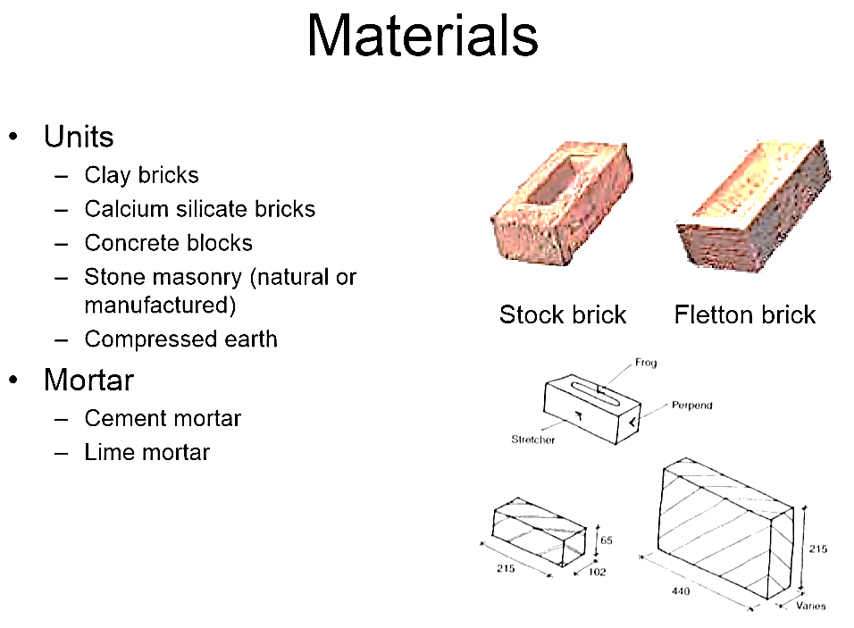
2.3.1 Masonry Units
A masonry unit is a brick, tile, stone, glass block or concrete block conforming to the requirements of the relevant code. The main families are:
| Unit | Description | Typical use / remark |
|---|---|---|
| Burnt clay brick | Moulded clay fired in a kiln | The standard structural unit in Nepal; strength 3.5–35 N/mm² |
| Sun-dried earth / adobe | Mud blocks dried in the sun | Cheapest; very weak, water-sensitive, extremely vulnerable in earthquakes (NBC 204) |
| Stone | Random rubble, coursed rubble, squared/dressed stone, ashlar | Dominant in hill and mountain Nepal; strong units but very weak wall because of poor bond (NBC 203) |
| Concrete block (CMU) | Cement + aggregate blocks larger than 305×102×102 mm | Fast, dimensionally accurate; hollow or solid |
| Calcium silicate / sand-lime brick | Lime + sand, autoclaved | Accurate size, uniform colour |
| Compressed earth block (CEB) | Soil, sometimes stabilised with 5–8% cement, compressed in a press | Low energy, low cost, growing use in Nepal |
| Hollow / perforated units, partition tiles | Units with voids | Lighter, better insulation; voids improve mortar keying |
Solid unit — net area in every such plane is 75% or more of the gross area.
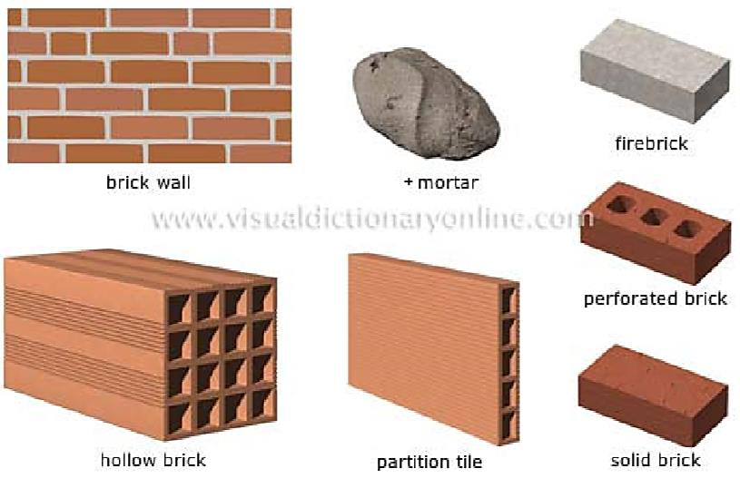
Physical properties of bricks 2081 Bhadra, Q3a
| Property | Requirement / typical value |
|---|---|
| Size (Nepal Standard NS 1:2035) | 240 × 115 × 57 mm with a 10 mm mortar joint. Note the modular rule: length of brick = 2 × width + 1 vertical mortar joint. (Modular brick in IS 1077 is 190×90×90 mm, nominal 200×100×100 mm; the common Nepali site brick is often quoted as 230×110×55 mm.) |
| Shape | Regular, truly rectangular with sharp, square edges and parallel faces; free from warpage, distortion and bowing. |
| Colour and texture | Deep cherry red or copper colour, uniform throughout; even, fine-grained, compact texture free from grit or lumps. |
| Soundness | Should emit a clear ringing (metallic) sound when two bricks are struck together, and should not break when dropped flat from about 1 m. |
| Hardness | No impression should be left when scratched with a finger nail. |
| Water absorption | Not more than 15% of its weight after 24 hours immersion in water at normal temperature. Hand-made bricks with keys (frogs) may absorb up to 25%. |
| Efflorescence | Should be nil to slight — no white salt deposit after immersion and drying. |
| Density / unit weight | About 1800–2000 kg/m³ for brick; brick masonry is usually taken as 19–20 kN/m³. |
| Structural quality | Thoroughly burnt, free from cracks, flaws, nodules of lime and organic matter. |
Mechanical properties
| Property | Typical value / relationship |
|---|---|
| Compressive strength of the unit | 3.5–40 N/mm² (IS 1905 Table 8 covers 3.5 to 40). Ordinary Nepali kiln brick is 5–12 N/mm². |
| Compressive strength of the masonry | Only about 25–50% of the unit strength — the joints, not the bricks, govern. |
| Tensile / flexural (bond) strength | Very low, typically 0.1–0.4 N/mm² and effectively zero for mud mortar. IS 1905 allows a permissible flexural tensile stress of only 0.07–0.14 N/mm². |
| Shear strength | Governed by cohesion + friction. IS 1905: permissible shear stress fs = 0.1 + fd/6, subject to a maximum of 0.5 N/mm², where fd is the compressive stress due to dead load. |
| Modulus of elasticity Em | Commonly taken as Em ≈ 550 to 1100 fm (often 750 fm); i.e. a few thousand N/mm². Much lower than concrete. |
| Poisson's ratio | About 0.15–0.20 |
| Modulus of rigidity G | About 0.4 Em |
2.3.2 Mortar
Requirements of a good mortar
- Strength — adequate crushing strength together with adequate tensile and shear strength; it must gain strength within a reasonable period so the masonry can take load early.
- Workability — must set early enough to let work proceed at a reasonable pace, while remaining plastic long enough to lay the units to line and level.
- Water retentivity — must not lose its water immediately to an absorbent brick and stiffen. Good water retentivity is what allows the mortar to develop a good bond and to fill the voids, giving resistance to rain penetration.
- Low drying shrinkage — to avoid cracking of the joints.
- Durability — resistance to sulphate and other chemical attack, and to frost.
- Accommodation of movement and of irregularities in unit size; good appearance; cost effective.
Types of mortar
| Type | Proportions | Characteristics |
|---|---|---|
| Cement mortar | Cement : sand, 1:3 to 1:8 | Sets early and gains strength quickly; can set and harden in wet locations. Richer than 1:3 is never used in masonry — it causes high shrinkage and does not increase masonry strength. Leaner than about 1:5–1:6 becomes harsh, unworkable and prone to segregation, and lean mortars do not fill the voids in the sand so they are not impervious. |
| Lime mortar | Lime : sand (or surkhi/cinder), 1:2 to 1:3 | Gains strength slowly and has low ultimate strength; fat-lime mortar does not harden at all in wet locations. Its great merits are good workability, good water retentivity and low shrinkage, so lime masonry resists rain penetration well and is less liable to crack. Hydraulic lime is better than fat lime; with fat lime a pozzolana (surkhi, cinder, fly ash) must be added. |
| Cement–lime mortar | Cement : lime : sand, 1:1:6, 1:2:9, 1:3:12 | Combines the good qualities of both — medium strength with good workability, good water retentivity, freedom from cracks and good rain resistance. Keeping binder : sand = 1:3 gives a very dense mortar because the sand voids are fully filled. |
| Mud mortar | Clayey soil + water | Attains some strength on drying but readily absorbs moisture and loses its strength when wet, and has poor bonding quality. Used only for temporary and low-cost single-storey rural houses. It is the main reason stone-in-mud houses collapse in Nepali earthquakes. |
Mortar grades (NBC 101 / IS 1905)
Mortars are classified for design convenience as H (high strength), M (medium) and L (low). The mortar type must be matched to the strength of the masonry unit:
| S.No. | Cement | Lime | Sand | Min. 28-day compressive strength (N/mm²) | Mortar type | Suitable unit strength (N/mm²) |
|---|---|---|---|---|---|---|
| 1 | 1 | 0 to 0.25 C | 3 | 10.0 | H1 | 25 or above |
| 2(a) | 1 | 0 | 4 | 7.5 | H2 | 15 to 24.9 |
| 2(b) | 1 | 0.5 C | 4.5 | 6.0 | H2 | |
| 3(a) | 1 | 0 | 5 | 5.0 | M1 | 5 to 14.9 |
| 3(b) | 1 | 1 C | 6 | 3.0 | M1 | |
| 4(a) | 1 | 0 | 6 | 3.0 | M2 | Below 5 |
| 4(b) | 1 | 2 C | 9 | 2.0 | M2 | |
| 4(c) | 0 | 1 A | 2 to 3 | 2.0 | M2 | |
| 5(a) | 1 | 0 | 8 | 0.7 | L1 | — |
| 5(b) | 1 | 3 C | 12 | 0.7 | L1 |
Notes. A, B and C denote eminently hydraulic, semi-hydraulic and fat lime respectively. Mortar strength varies appreciably with the angularity, grading and fineness of the sand, so the sand content may be reduced where necessary. With plain cement–sand mortars a plasticiser should be added to improve workability. 1 N/mm² = 1 MPa = 10.2 kg/cm². For first-class brickwork the mortar should be H1 or H2.
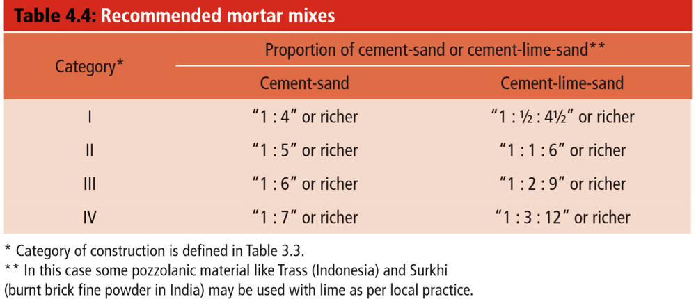
2.3.3 Bonds and Brick-laying Terminology
A bond is the pattern in which units are laid. In a single-thickness wall the bond is largely decorative, but in double-thickness walls the bond is structural — it ties the leaves together and prevents continuous vertical joints, which would otherwise split the wall.
| Term | How the brick is laid |
|---|---|
| Stretcher | Horizontally, flat, with the long side exposed on the wall face |
| Header | Horizontally, flat, with the short end exposed |
| Soldier | Vertically, with the narrow (stretcher) side exposed |
| Sailor | Vertically, with the broad side exposed |
| Rowlock (bull header) | On the long narrow side, with the header face exposed |
| Shiner | On the long narrow side, with the broad face exposed |
| Queen closer | A brick cut lengthwise to half width, used next to the quoin header to create the face lap |
| Perpend | The vertical (head) joint between two units in the same course |
| Frog | The indentation in the bed face of a brick that keys the mortar |
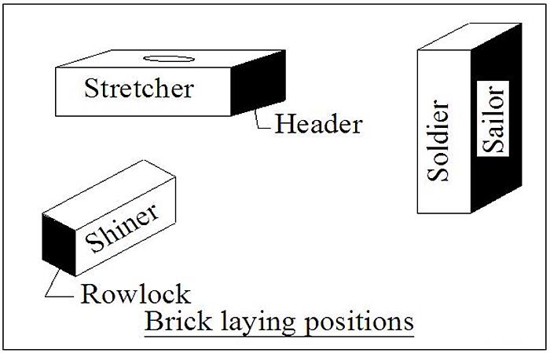
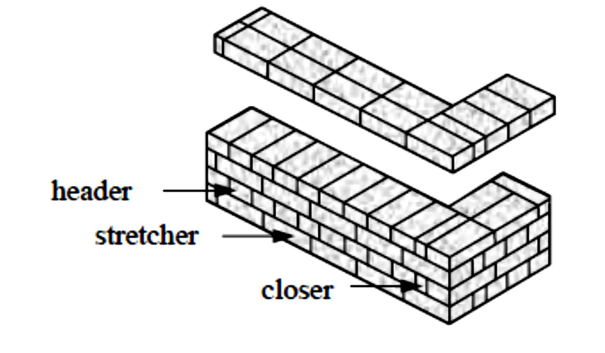
| Bond | Description | Remark |
|---|---|---|
| English bond | Alternate courses of all headers and all stretchers on both faces. Each header course starts with a quoin header followed by a queen closer; stretchers lap a minimum of a quarter brick over the headers. | Strongest bond — no continuous vertical joints. Adopted for most load-bearing masonry that is to be plastered. Header joints must be kept thin or the face lap disappears. |
| Flemish (Dutch) bond | Alternate headers and stretchers within each course; the header of one course sits centrally over the stretcher of the course below. | Most decorative; needs the perpends to line up vertically, which is hard to achieve. Slightly weaker than English bond, but wastes fewer good-quality face bricks. |
| Rat-trap bond | Bricks laid on edge so that shiners and rowlocks show on the face, creating an internal cavity bridged by the rowlocks. | Uses about 25–35% fewer bricks and gives good thermal insulation. Popularised in India by Laurie Baker. It is a modular technique — wall and opening dimensions are set by the brick size. |
| Stretcher (running) bond | All stretchers, each lapping half a brick | Only for half-brick partitions and veneers — not load bearing. |
| Header bond | All headers | Used for curved walls and footings. |
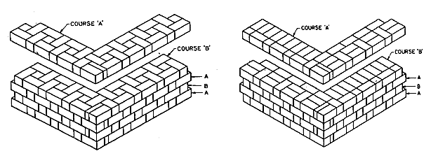
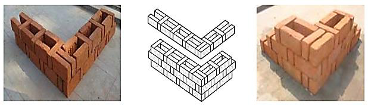
2.3.4 Strength of Masonry — Unit–Mortar Interaction 2078 Bhadra, Q2b2080 Bhadra, Q2a
The compressive strength of masonry is not the strength of the brick, and it is not the strength of the mortar. It is governed by the interaction between them:
Because masonry units are weak in tension, failure starts as vertical splitting cracks through the units, not by crushing of the mortar. This is why:
- masonry strength is only about 25–50% of the unit strength;
- increasing the mortar strength gives a less than proportionate gain in masonry strength — doubling mortar strength may raise masonry strength by only 15–25%;
- a thinner bed joint gives a stronger wall, because less soft material means less lateral tension;
- the mortar should be weaker than the unit — a mortar stronger than necessary is wasteful, cracks the units rather than the joints, and produces brittle, unrepairable failure.
Empirical relations
fk = K · fbα · fmβ with typically α ≈ 0.7 and β ≈ 0.3
fk = characteristic compressive strength of masonry, fb = strength of the unit, fm = strength of the mortar, K = constant for the unit/bond type.
The exponents say it all: unit strength matters more than twice as much as mortar strength.
2.3.5 Factors Affecting the Compressive Strength of Brick Masonry 2076 Chaitra, Q1a2078 Bhadra2080 Bhadra
This is the most frequently asked theory question of the chapter. Organise the answer in four groups:
| Group | Factor | Effect on masonry strength |
|---|---|---|
| A. The unit | Strength of the masonry unit | The single most important factor. Masonry strength rises with unit strength, but only to about 25–50% of it. |
| Shape, size and height/width ratio of the unit (as laid) | A taller unit means fewer bed joints per metre of wall, so less soft material and less lateral tension → higher strength. Accounted for by the shape modification factor kp. | |
| Frogs, perforations and voids | Reduce the net bearing area and can cause stress concentration; hollow units are weaker per gross area. | |
| Water absorption / suction rate | A very absorbent dry brick sucks the water out of the mortar before it can hydrate, destroying the bond. Bricks must be soaked before laying. | |
| B. The mortar | Strength and grade of mortar | Increases masonry strength, but far less than proportionately. Mortar should be as weak as is permissible — not stronger than the unit. |
| Mix proportion and workability | Rich mixes (>1:3) shrink and crack; lean mixes (<1:6) are harsh, segregate and leave voids. Good workability → full joints → higher strength. | |
| Water retentivity, deformability | A mortar that is too stiff or too deformable both reduce strength; a more deformable mortar increases the lateral tension in the unit. | |
| C. Geometry of the masonry | Thickness of the mortar joint | Very significant. Strength decreases as joint thickness increases — a 10 mm joint is standard; a 20 mm joint can lose 20–30% of the strength. |
| Slenderness ratio | Higher SR → buckling governs instead of crushing → permissible stress reduced by ks. | |
| Eccentricity of loading | Eccentric load adds bending, so the compressive stress on one face is much higher; permissible stress reduced by ks. | |
| Cross-sectional area | Small sections have less redundancy and greater relative effect of a single defect — hence the area reduction factor ka for areas below 0.2 m². | |
| D. Workmanship & construction | Bond pattern and corner interlocking | Continuous vertical joints (poor bond) split the wall into independent leaves and drastically reduce strength. |
| Filling of vertical (head) joints | Unfilled perpends are one of the commonest defects; they reduce shear and compressive strength. | |
| Uniformity and fullness of bed joints; verticality (plumb) | Uneven joints create local stress concentrations; out-of-plumb walls introduce unintended eccentricity. | |
| Curing and age | Cement mortar needs curing; masonry strength continues to develop for 28 days and beyond. | |
| Rate of construction / height of lift per day | Building too fast overloads green mortar and squeezes the joints. |
- One line: masonry strength ≈ 25–50% of unit strength — it is the joints that govern.
- The unit–mortar interaction mechanism with Fig. 2.8 (2–3 marks are here).
- The four-group table above — give at least 8–10 factors with a one-line effect each.
- Close with the design consequence: this is why IS 1905 multiplies the basic compressive stress by ks, ka and kp (§2.6).
2.4 Types of Masonry Structures and Types of Walls 2076 Chaitra2078 Bhadra2079 Bhadra
PAST EXAM QUESTIONS ON THIS TOPIC:
- Explain load-bearing masonry walls, infill masonry, and confined masonry. [8] (2079 Bhadra, Q2a)
- Define masonry structure type based on materials with its advantages and disadvantages. [6] (2078 Bhadra, Q2a)
- Explain the following applied to masonry structures: (ii) Confined masonry. [4] (2076 Chaitra, Q4b)
2.4.1 Classification by Material 2078 Bhadra, Q2a
| Type | Advantages | Disadvantages |
|---|---|---|
| Brick masonry (burnt clay units) |
Uniform shape and size → good bond and thin joints; good strength (3.5–35 N/mm²); easy to lay openings and bands; durable, fire and weather resistant; locally manufactured. | Needs good clay, fuel and kilns (energy and pollution); quality varies between kilns; heavy; weak in tension. |
| Stone masonry (random rubble, coursed rubble, squared, ashlar) |
Very high unit strength; extremely durable; locally available free of cost in hill areas; attractive; good thermal mass. | Irregular shapes give poor bond and very thick joints; walls are usually multi-leaf and delaminate; very heavy; needs skilled masons; the worst-performing type in Nepali earthquakes, especially random rubble in mud mortar. |
| Concrete block masonry | Accurate dimensions, fast construction (large units), fewer joints, uniform quality, can be reinforced through the hollow cores. | Needs cement and a plant; drying shrinkage cracking; heavier per unit if solid; higher initial cost. |
| Adobe / earthen masonry | Cheapest; zero-energy production; excellent thermal comfort; entirely local material and skills. | Very low strength, no tensile capacity, degrades on wetting, erodes; extremely vulnerable in earthquakes (see NBC 204). |
| Composite / faced masonry | Combines an economical backing (rubble, block) with a good-quality facing (brick, ashlar). | The two leaves have different stiffness and may separate if not properly bonded through with headers. |
2.4.2 Classification by Structural System 2079 Bhadra, Q2a
This is the key classification for the exam. The distinguishing feature is the load path and whether the wall is a structural element or not.
(A) Load-bearing masonry
- The masonry walls themselves are the main supporting elements — there is no separate frame.
- Load path: roof / floor slab → main (load-bearing) walls → plinth → foundation → soil. Both gravity and lateral loads travel through the walls.
- Walls parallel to the shaking act as shear walls (in-plane); walls perpendicular to it are loaded out-of-plane.
- Economical for low-rise buildings (up to 3–4 storeys); thickness increases rapidly with height.
- Unreinforced load-bearing masonry is brittle; earthquake resistance must be supplied by horizontal bands, vertical reinforcement, good corner bonding and box action.
(B) Confined masonry 2076 Chaitra, Q4b(ii)
The defining construction sequence: the masonry wall is built FIRST, with toothed vertical edges, and the tie-columns are then cast against the completed wall. In an RC frame with infill it is the exact opposite — the frame is cast first and the wall is built into it afterwards. This is the single sentence that separates the two systems in an exam answer.
- Tie-columns (also called practical columns) resemble RC columns but are of much smaller cross-section; tie-beams resemble RC beams. They are not a moment frame — the masonry, not the ties, carries the load.
- Load path: roof / floor → masonry walls (confined by the ties) → plinth band → foundation. Box integrity is provided by the confining elements.
- The confining members are effective in:
- enhancing the stability and integrity of the wall for both in-plane and out-of-plane earthquake loading — they contain the damaged masonry and stop it from disintegrating;
- enhancing the lateral strength of the wall; and
- reducing the brittleness of the wall, thereby improving its earthquake performance.
- It has emerged over the last 100 years as an economical alternative that lies between unreinforced masonry and RC frame construction, and is now the recommended system for small buildings in much of Latin America and Asia.
Structural components of a confined masonry building: masonry walls (carry gravity load down and act as bracing panels against horizontal force); confining elements (restrain the walls, prevent complete disintegration and ensure vertical stability); floor and roof slabs (transmit gravity and lateral load to the walls, acting as horizontal diaphragms); plinth band (transmits wall loads to the foundation and protects ground-floor walls from differential settlement in soft soil); and the foundation.
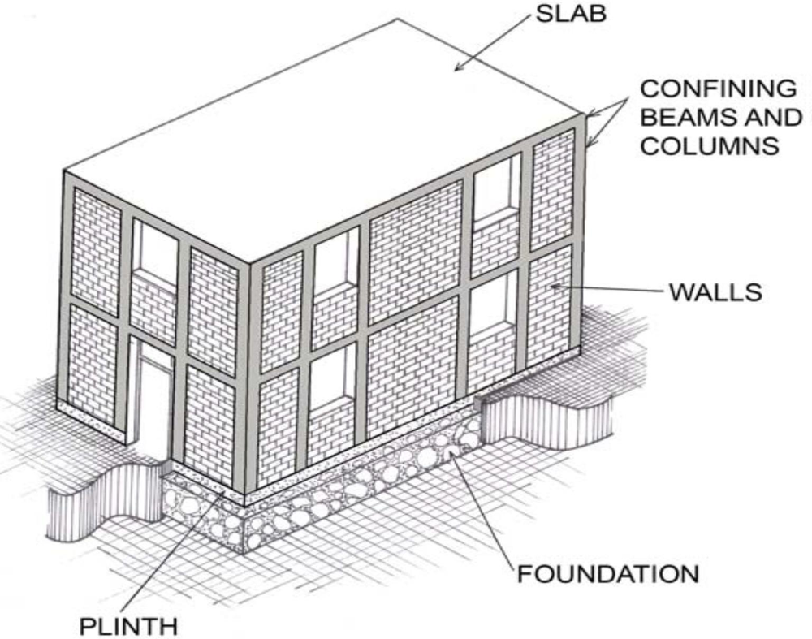
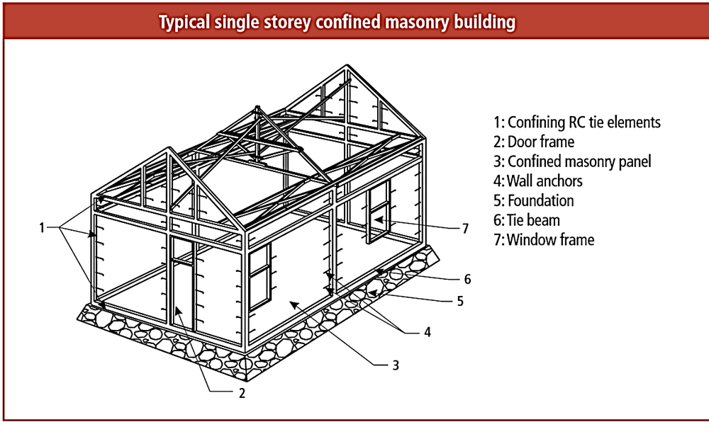
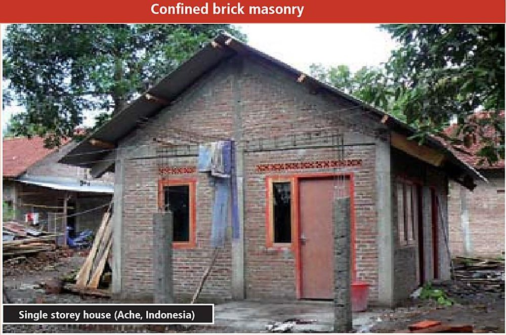
(C) Infill masonry
- Infill walls are masonry panels enclosed by RC or steel frame members on all four sides. The frame — not the wall — is the designed structure.
- Load path: slab → beam → column → foundation. The infill is nominally non-structural, and in routine design it is treated only as a load.
- In reality the infill has a major effect:
- It greatly increases the lateral stiffness of the frame, shortening the natural period and attracting more force. This stiffness must be accounted for when distributing the applied loads.
- Under lateral load the panel acts as a diagonal compression strut, so an infilled frame can be analysed as a truss.
- Infill should still be designed to resist the in-plane and out-of-plane loads acting on it, and any vertical load transferred to it by the frame.
- The dangers. A sudden loss of stiffness when the infill cracks can create a soft-storey mechanism at any floor level. An irregular distribution of infill in elevation (the classic open ground storey for shops or parking) concentrates all the drift in one storey. Partial-height infill produces the short-column effect. Reported earthquake damage studies consistently show a high level of damage in RC frames with masonry infill.
- Conversely, continuous and well-distributed infill has been shown to reduce the vulnerability of an RC structure — in a full-scale test of a three-storey flat-plate structure the addition of infill walls prevented the punching-shear slab collapse seen in the bare-frame test and increased both the stiffness and the strength of the structure (measured drift capacity 1.5%).
(D) Unreinforced vs reinforced masonry
| Basis | Unreinforced masonry (URM) | Reinforced masonry |
|---|---|---|
| Design assumption | Flexural tensile stresses are resisted by the masonry; any reinforcement present is neglected in design | Flexural tensile stresses cannot be resisted by the masonry and are resisted by reinforcement only |
| Shear | Resisted by masonry alone | Resisted by masonry or reinforcement, singly or in combination |
| Method | Linear elastic range; working stress design | Allowable stress design or strength design |
| Seismic performance | Brittle; vulnerable to collapse; elements may “peel” off the building onto occupants and passers-by | Ductile; much better under cyclic load |
| Note | “Unreinforced masonry” can in fact contain reinforcement placed for structural integrity or by prescription — the term refers to the design assumption, not to the absence of steel. | |
Reinforced brickwork has been used in India and Japan since after the First World War and in America since after the Second. Bars are placed in the voids created by particular bonds and/or in the bed joints; bed-joint reinforcement in particular enhances the capacity of walls to resist lateral loading. Post-tensioning is also used for retaining walls, tanks and footbridges. Reinforced masonry is the subject of Chapter 5.
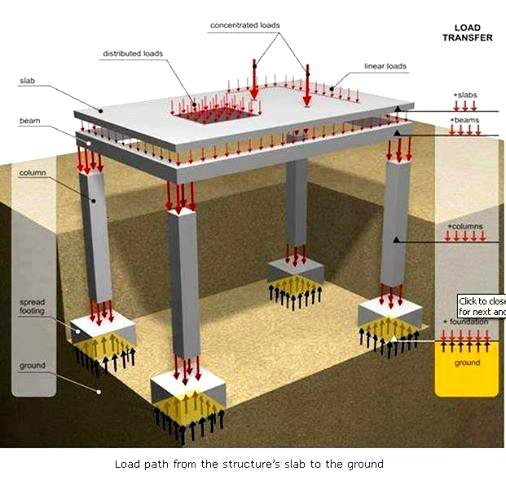
Comparison of the three systems
| Basis | Load-bearing masonry | Confined masonry | Infill masonry (RC frame) |
|---|---|---|---|
| Primary vertical load path | Walls | Walls (ties assist) | Beams and columns |
| Primary lateral resisting element | Walls acting in-plane | Confined wall panels | Frame + infill acting as a diagonal strut |
| Construction sequence | Walls only | Wall first, then tie-columns cast against it | Frame first, wall built into it afterwards |
| Is the wall a structural element? | Yes | Yes | Nominally no (but behaves as one) |
| Ductility / seismic performance | Poor unless banded and reinforced | Good — ties contain the damage | Depends on the frame; risk of soft storey and short column |
| Economy & skill | Cheapest, least skill | Moderate cost, moderate skill | Most expensive, needs engineering |
| Suitable height | 1–3 storeys | Up to about 3–4 storeys | Multi-storey |
2.4.3 Types of Walls
| Classification | Type | Description |
|---|---|---|
| By function | Load-bearing wall | Carries vertical load from the roof/floor in addition to its own weight. |
| Non-load-bearing wall | Carries only its own weight — partition, panel, curtain, parapet, free-standing and compound walls. | |
| By construction | Solid wall | Single leaf of full thickness, e.g. half-brick (115 mm), one-brick (230 mm), one-and-a-half brick (350 mm). |
| Cavity wall | Two leaves separated by a continuous air cavity (50–100 mm) and tied by metal ties. Gives thermal insulation and prevents rain penetration. Its effective thickness for design is two-thirds of the sum of the two leaf thicknesses, or the thickness of the thicker leaf, whichever is greater. | |
| Collar-jointed wall | Two leaves separated by a narrow vertical joint fully filled with mortar or grout. | |
| Faced wall | Facing and backing of different materials bonded together so that they act as one unit under load. | |
| Veneered wall | A facing attached to the backing but not bonded to it — the facing carries no load. | |
| By structural role | Shear wall | A wall designed to resist lateral force acting in its own plane. The principal earthquake-resisting element of a masonry building. |
| Cross wall | A wall perpendicular to another that stiffens it and reduces its effective length. | |
| Panel wall | An exterior non-load-bearing wall in a framed structure, wholly supported at each storey. | |
| Curtain wall | A non-load-bearing wall spanning between columns/piers, subject only to its own weight and wind/seismic load on itself. | |
| Free-standing wall | Not laterally supported — compound and parapet walls. Limiting slenderness ratio only 10. | |
| Retaining wall | Resists lateral earth pressure. |
2.5 Lateral Force Resisting Elements (Walls, Piers and Arches)
2.5.1 The Three Primary Elements of a URM Building
Any masonry building resisting an earthquake can be reduced to three primary elements. Which role a wall plays depends entirely on the direction of shaking at that instant — and because shaking reverses and acts in both horizontal directions, every wall plays both roles in turn.
| Element | Role |
|---|---|
| In-plane wall (shear wall) | Parallel to the shaking. Stiff and strong in this direction; carries the storey shear by in-plane shear and flexure. Fails by diagonal (X) cracking, sliding, toe crushing or rocking. |
| Out-of-plane wall | Perpendicular to the shaking. Behaves as a vertical slab spanning between the floor and the roof (and horizontally between cross walls). Very weak — overturns and collapses. This is the dominant collapse mechanism of URM. |
| Diaphragm (floor / roof) | Horizontal plate that collects the inertia force from the out-of-plane walls and distributes it to the in-plane walls. A rigid diaphragm (RC slab) distributes force in proportion to wall stiffness; a flexible diaphragm (timber joists, CGI sheet) distributes in proportion to tributary area and leaves the out-of-plane walls unsupported. |
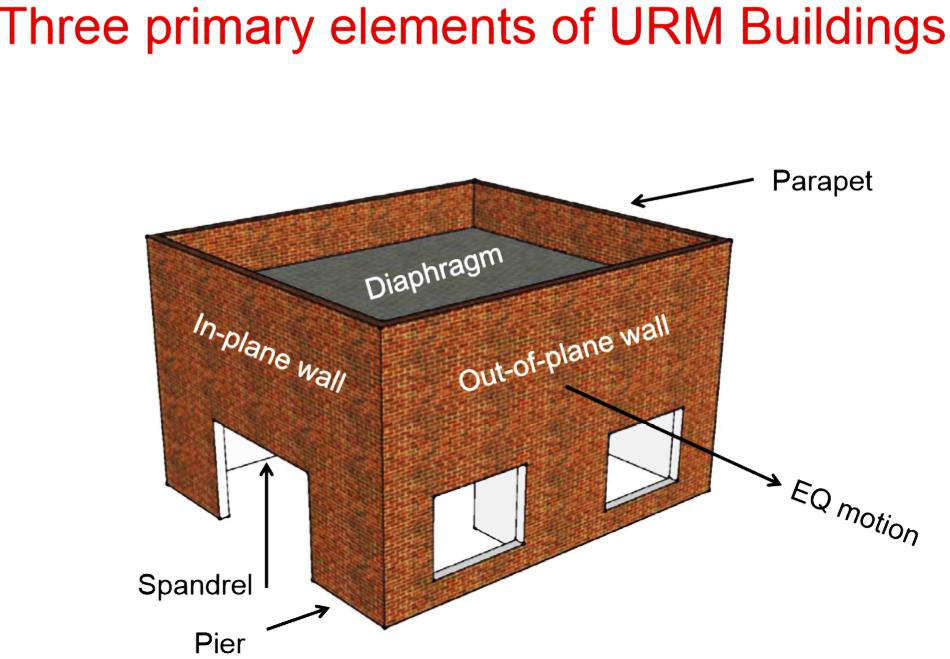
2.5.2 Piers and Spandrels
- A pier is the length of wall between two openings in the same storey. It is the vertical element that actually carries the in-plane shear, so a perforated wall behaves as a set of piers coupled by spandrels rather than as a solid wall.
- A spandrel is the masonry above and below the openings, spanning horizontally between piers. It couples the piers and transfers shear between them.
- Whether the piers or the spandrels are the weaker element decides the failure mechanism: weak-pier/strong-spandrel gives a soft-storey-like shear failure of the piers (dangerous), while strong-pier/weak-spandrel gives cracking of the spandrels first (more ductile and preferable).
- The number, size and location of openings therefore controls the seismic behaviour — openings must be small, centrally placed, aligned vertically, and kept away from corners.
- Piers also attract an increase in axial load due to overturning, which is checked in Chapter 4.
2.5.3 Arches
- An arch spans an opening by converting the vertical load into compression along its curve, so it can be built from a material that has no tensile strength.
- The price is a horizontal thrust at the springing, which must be resisted by heavy abutments, buttresses or a tie rod. Under lateral shaking the thrust changes and the arch can spread and collapse — a very common failure of historic monuments and pati/sattal.
- Types by shape: flat/jack, segmental, semicircular, pointed (Gothic), parabolic, corbelled. The traditional Nepali equivalent is the corbelled opening built by stepping successive courses inwards.
- An arch is stable so long as the line of thrust stays within the middle third of the arch ring; hinges form where it touches the edge, and four hinges turn the arch into a mechanism.
- Lintels are the modern alternative; a reinforced brick or RC lintel avoids the thrust problem and is preferred in seismic regions. Arching action in walls over openings (rigid and gapped arching) is dealt with in Chapter 4.
2.5.4 Bands, Ties and Box Action
Individually strong walls are not enough — they must be tied together so the building behaves as a single closed box. The elements that provide this box integrity are:
| Element | Purpose |
|---|---|
| Plinth band | Transmits the wall load to the foundation and ties the walls at plinth level. Required wherever the soil is soft or uneven in its properties. |
| Sill band | At window sill level; limits the vertical cracking that starts at the corners of openings. |
| Lintel band | The most important band. It must be provided in all storeys and all walls, and shall incorporate all door and window lintels (the lintel reinforcement being extra to the band steel). It gives the walls horizontal bending strength for out-of-plane inertia and ties orthogonal walls together. |
| Roof / eave band | Provided at eave level of trussed roofs and at floors made of joists and covering elements, to integrate them at their ends and fix them into the walls. |
| Gable band | Encloses the triangular gable masonry; its horizontal part is continuous with the eave-level band on the longitudinal walls. Alternatively use a truss or open gable clad in light sheeting. |
| Vertical (containment) reinforcement | Bars at corners, wall junctions and the jambs of openings, anchored into the bands, that resist the tension caused by overturning and rocking. |
| Wall anchors / roof-to-wall connection | Prevents the roof from sliding off and lets the diaphragm actually deliver its force to the walls. |
| Toothed or stepped vertical joint at wall junctions | Full bond between perpendicular walls, achieved by building the corners first to a height of 600 mm and then filling in between, or by a toothed joint made in each wall alternately in lifts of about 450 mm. |
Note. If the wall height up to eave level is 2.5 m or less, the lintel-level band may be omitted and the lintel integrated with the eave-level band.
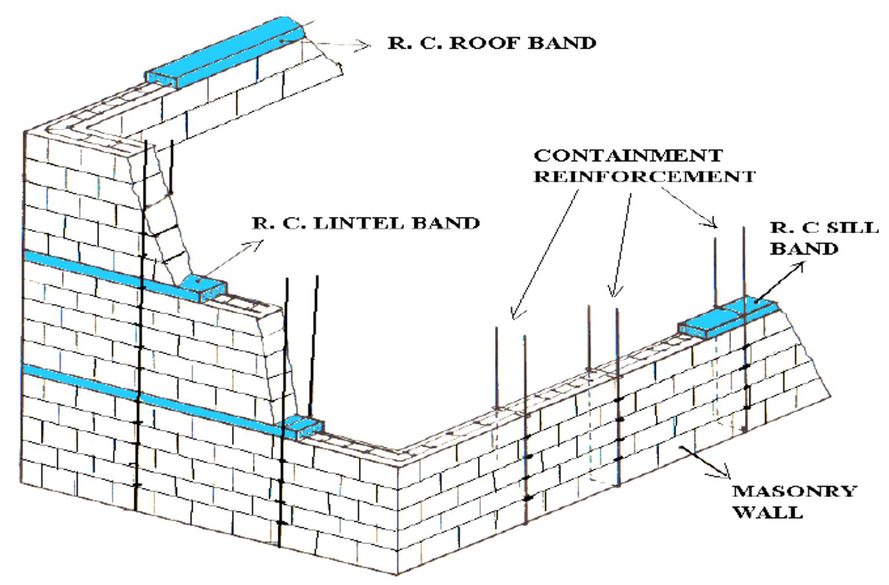
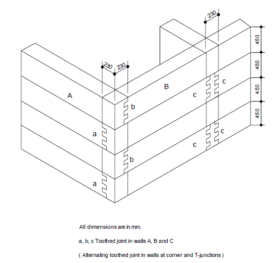
2.6 Structural System of Historical Masonry Structures; Review on Design of Masonry Walls for Static Force 2075 Chaitra2076 Chaitra2080 Bhadra
PAST EXAM QUESTIONS ON THIS TOPIC:
- Explain the following and state the influence of it on strength of the wall: (i) Slenderness ratio (ii) Shape modification factor. [12] (2075 Chaitra, Q3)
- Explain the following applied to masonry structures: (i) Stress reduction factor. [4] (2076 Chaitra, Q4b)
- Explain the design criteria of walls subjected to transverse loading. [8] (2076 Chaitra, Q2a)
- Calculate the effective height, effective length, effective thickness and slenderness ratio of walls A, C, G and P. [12] (2080 Bhadra, Q2b)
- Plus every wall / pier / column design numerical: 2075 Q4, 2078 Q3–Q6, 2079 Q3b & Q4b, 2080 Q3a–b, 2081 Q3b.
2.6.1 Structural System of Historical Masonry Structures
| Feature | Description and structural consequence |
|---|---|
| Thick multi-leaf (three-wythe) walls | Good facing brick on both faces with a weak rubble-and-mud core. The three leaves are rarely tied by through-headers, so they delaminate and buckle outwards under shaking. |
| Mud or weak lime mortar | Almost no bond or tensile strength; loses strength completely when wet. |
| Massive walls, tapering with height | Stability by gravity and by the middle-third rule rather than by any tensile capacity. |
| Flexible timber floors and roofs | Timber joists simply rest on the walls without anchorage — there is no diaphragm action, so the out-of-plane walls are unsupported at the top and the walls act independently instead of as a box. |
| Heavy roofs | Heavy tiles or thick mud overlay high up in the building → large inertia force at the worst possible level. |
| Large and irregular openings | Elaborately carved windows and wide shop-front openings at ground level produce slender piers and a soft ground storey. |
| Arches, corbels, domes and vaults | Compression-only elements that develop horizontal thrust; they spread and hinge under lateral shaking. |
| Absence of bands and vertical ties | No horizontal reinforcement at all — the corners separate first. |
| Beneficial traditional features | Timber pegs and through-timbers acting as crude ties, timber bands in some Newari and hill construction, symmetric plans, and low height-to-width ratios. These are the features that survived the 1934 and 2015 earthquakes. |
2.6.2 Basic Principle of Design in Compression
The left-hand side comes from the known applied loading. The right-hand side is a function of the characteristic compressive strength of the masonry fck, the slenderness ratio and the eccentricity of loading.
IS 1905:1987 uses the working stress method — the actual stress produced by the loads must stay within a permissible limit:
What the permissible compressive stress depends on
- Type and strength of the masonry units
- Strength (grade) of the mortar
- Slenderness ratio
- Eccentricity of loading
- Shape and size of the units
- Cross-sectional area of the masonry
fper = fb × ks × ka × kp
fb = basic compressive stress (IS 1905 Table 8), from the unit crushing strength and the mortar type
ks = stress reduction factor (Table 9) — for slenderness ratio and eccentricity
ka = area reduction factor — for a small cross-section
kp = shape modification factor (Table 10) — for the height/width ratio of the unit
2.6.3 Behaviour under Axial and Eccentric Load
- If a pure axial load could be applied, the mode of failure would depend on the slenderness ratio: short stocky members fail by crushing of the material; long thin members fail by lateral instability (buckling).
- The failure stress at zero slenderness ratio depends on the strength of the units and mortar, and varies between about 7.0 and 24 N/mm².
- In practice it is virtually impossible to apply a truly axial load — that would need a perfect member with
no fabrication error. The vertical load is generally eccentric to the centroidal axis and therefore produces a
bending moment. This can be allowed for in two ways:
- add the stresses due to the equivalent axial load and the bending moment: σ = WA ± MZ where A and Z are the area and section modulus of the cross-section; or
- reduce the axial load-carrying capacity of the wall or column by a suitable factor — which is what IS 1905 does through ks.
2.6.4 Effective Height, Effective Length and Effective Thickness
(a) Effective height heff
The effective height relates to the degree of restraint imposed by the floors and beams that frame into the wall or column. If the ends of a strut were free, pinned or fully fixed the effective height could be computed from Euler buckling theory; IS 1905 tabulates practical values instead. Typical values are:
| Support condition | Effective height |
|---|---|
| Wall laterally supported at top and bottom (RC slab bearing on the full thickness) | 0.75 H |
| Wall with partial restraint at top and bottom (timber floor / slab on part thickness) | H |
| Wall laterally supported at bottom only (free at top — parapet, free-standing) | 1.5 H to 2 H |
| Column, restrained in both directions | H, or 0.75 H if fully restrained — per Table 5 of IS 1905 |
Openings in walls. When openings occur such that the masonry between them acts as a pier/column:
| Restraint at top | Direction perpendicular to the plane of the wall | Direction parallel to the plane of the wall |
|---|---|---|
| Full restraint | heff = 0.75 H + 0.25 H1, where H is the distance between supports and H1 is the height of the taller opening | heff = H (the distance between the supports) |
| Partial restraint | heff = H when the height of neither opening exceeds 0.5 H; 2 H when the height of any opening exceeds 0.5 H | heff = 2 H |
(b) Effective length leff
The effective length depends on the end conditions along the length of the wall. The four conditions that occur, in various combinations, are:
- Free end
- Continuity of the wall (the wall carries on past the point considered)
- Support from a cross wall, pier or buttress
- Openings
Various combinations of these determine the effective length; the coefficients are given in Table 4 of IS 1905 (typically 0.8 L for a wall continuous or supported at both ends, 1.0 L for one end supported, 1.5–2.0 L where one end is free).
(c) Effective thickness teff
| Case | Effective thickness |
|---|---|
| Single-leaf solid wall or column | The actual thickness |
| Solid wall bonded into piers, buttresses or cross walls | teff = stiffening coefficient × tw (Table 6 of IS 1905). Applies only when the slenderness ratio is based on the effective height; no modification is made when SR is based on the effective length. |
| Cavity wall | Two-thirds of the sum of the two leaf thicknesses, or the thickness of the thicker leaf, whichever is greater |
Table 6 — Stiffening coefficients for walls stiffened by piers, buttresses or cross walls
| Sp / Wp | Stiffening coefficient for tp / tw = | ||
|---|---|---|---|
| 1 | 2 | 3 or more | |
| 6 | 1.0 | 1.4 | 2.0 |
| 8 | 1.0 | 1.3 | 1.7 |
| 10 | 1.0 | 1.2 | 1.4 |
| 15 | 1.0 | 1.1 | 1.2 |
| 20 or more | 1.0 | 1.0 | 1.0 |
where Sp = centre-to-centre spacing of the pier or cross wall; tp = thickness of the pier; tw = actual thickness of the wall proper; Wp = width of the pier in the direction of the wall, or the actual thickness of the cross wall. Linear interpolation is permitted, extrapolation is not. If the thickness of a cross wall acting as a pier is not given, take tp = 3 tw. Strength is increased by providing piers, buttresses and cross walls, and this stiffening effect is what the coefficient represents.
2.6.5 Slenderness Ratio (SR) 2075 Chaitra, Q3(i)2080 Bhadra, Q2b
(For a column, SR is based on the effective height and the corresponding effective thickness in each direction, and the larger of the two governs.)
Influence of slenderness ratio on the strength of a wall
- SR is a measure of the wall's tendency to buckle. As SR increases, the mode of failure changes from crushing to lateral instability, and the failure stress falls (Fig. 2.16).
- For SR ≤ 6 the buckling effect is not appreciable and the basic compressive stress is not reduced (ks = 1.0 when e = 0).
- For SR > 6 a reduction factor for slenderness (the stress reduction factor ks) given in the code must be applied, and the permissible stress falls steadily — from 1.00 at SR 6 to about 0.43 at SR 27 for axial load.
- The buckling effect may be ignored within one-eighth of the height of the member above or below the position of lateral support — the allowable stress is not reduced there.
- Practical consequences: a taller storey, a thinner wall, or the removal of a cross wall/pier all raise SR and therefore reduce the permissible stress. Adding piers, buttresses or cross walls raises teff and lowers SR, increasing the capacity.
Limiting (maximum permissible) slenderness ratio
| Type of wall | Number of storeys | Max. SR |
|---|---|---|
| Load-bearing walls in cement or cement–lime mortar of type H1, H2, M1 or M2 | One or two storeys | 27 |
| Three or more storeys | 27 | |
| Load-bearing walls in lime mortar of type M2 or L1 | One or two storeys | 20 |
| Three or more storeys | 13 | |
| Non-load-bearing walls | Panel and curtain walls | 30 |
| Free-standing walls and parapets | 10 |
2.6.6 Eccentricity of Loading
W = W1 + W2 ē = W2 · eW1 + W2 eccentricity ratio = ētw
W1 = axial load, W2 = eccentric load acting at a distance e from the centre line, tw = thickness of the wall.
Effect of eccentricity on the allowable stress (IS 1905, clause 5.4.1.4)
| Eccentricity | Treatment |
|---|---|
| e ≤ t/24 | Ignore the stress due to eccentricity — calculate and check the axial stress only. |
| t/24 < e ≤ t/6 | The resulting combined axial and bending stress may be allowed to exceed the permissible stress by not more than 25%. |
| e > t/6 | Tension occurs on the section. Ignore the part of the thickness in tension; the compressive stress on the extreme fibre is then fc = 2P3 · L · (t/2 − e) (P = vertical load). This stress may again exceed the code value by not more than 25%. |
Note also that where the eccentricity ratio lies between 1/3 and 1/2 of the thickness, the stress reduction factor varies linearly between unity and 0.20 for slenderness ratios of 6 and 20 respectively.
2.6.7 The Three Modification Factors 2075 Chaitra2076 Chaitra
(a) Basic compressive stress fb — IS 1905 Table 8
The values in Table 8 take into account the crushing strength of the masonry unit and the grade of mortar. They are valid for SR not exceeding 6, zero eccentricity, and a unit height-to-width ratio (as laid) of 0.75 or less. Alternatively the basic compressive stress may be based on a prism test (Appendix B of the code) on masonry made from the units and mortar actually to be used on the job.
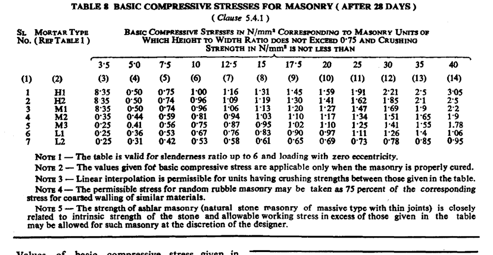
A compact extract of the most-used part of the table:
| Mortar type | 3.5 | 5.0 | 7.5 | 10 | 12.5 | 15 | 17.5 | 20 |
|---|---|---|---|---|---|---|---|---|
| H1 | 0.35 | 0.50 | 0.75 | 1.00 | 1.16 | 1.31 | 1.45 | 1.59 |
| H2 | 0.35 | 0.50 | 0.74 | 0.96 | 1.09 | 1.19 | 1.30 | 1.41 |
| M1 | 0.35 | 0.50 | 0.74 | 0.96 | 1.06 | 1.13 | 1.20 | 1.27 |
| M2 | 0.35 | 0.44 | 0.59 | 0.81 | 0.94 | 1.03 | 1.10 | 1.17 |
| M3 | 0.25 | 0.41 | 0.56 | 0.75 | 0.87 | 0.95 | 1.02 | 1.10 |
| L1 | 0.25 | 0.36 | 0.53 | 0.67 | 0.76 | 0.83 | 0.90 | 0.97 |
| L2 | 0.25 | 0.31 | 0.42 | 0.53 | 0.58 | 0.61 | 0.65 | 0.69 |
Basic compressive stress fb (N/mm²) — column headings are the unit crushing strength in N/mm². Always confirm against the code in the exam hall; the full table runs to 40 N/mm².
(b) Stress reduction factor ks — IS 1905 Table 9 2076 Chaitra, Q4b(i)
ks = 1.00 for SR ≤ 6 with e = 0, and falls to about 0.43 at SR = 27 for axial load, and much lower still for large eccentricity.
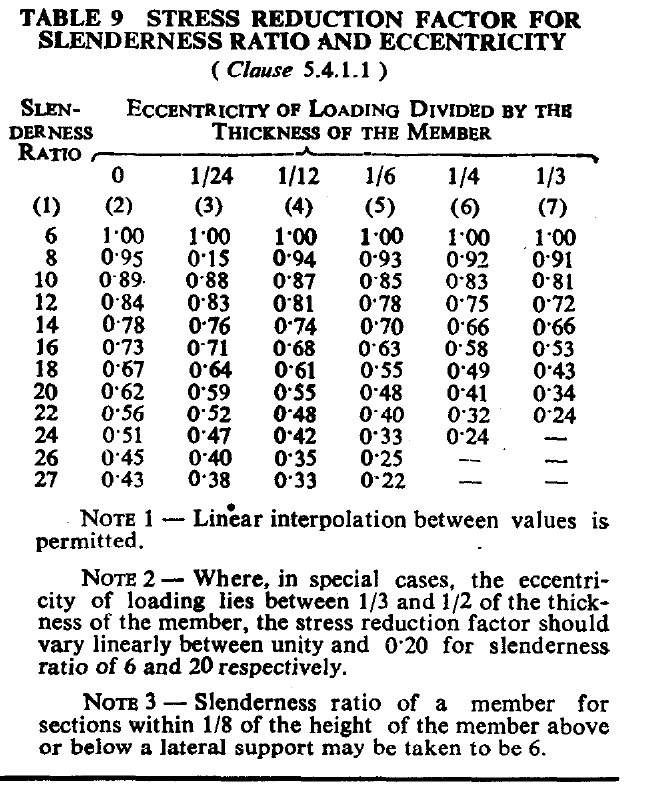
(c) Area reduction factor ka — IS 1905 clause 5.4.1.2
ka = 0.7 + 1.5 A (A = area of section in m²)
For A ≥ 0.2 m², ka = 1.0 — check: 0.7 + 1.5×0.2 = 1.0. ✓
Reason: a small section has little redundancy, so a single weak brick or badly filled joint has a proportionately larger effect on the capacity.
(d) Shape modification factor kp — IS 1905 Table 10 2075 Chaitra, Q3(ii)
| Height to width ratio of the unit (as laid) | kp for units of crushing strength (N/mm²) | |||
|---|---|---|---|---|
| 5.0 | 7.5 | 10.0 | 15.0 | |
| Up to 0.75 | 1.0 | 1.0 | 1.0 | 1.0 |
| 1.0 | 1.2 | 1.1 | 1.1 | 1.0 |
| 1.5 | 1.5 | 1.3 | 1.2 | 1.1 |
| 2.0 to 4.0 | 1.8 | 1.5 | 1.3 | 1.2 |
Linear interpolation between values is permissible.
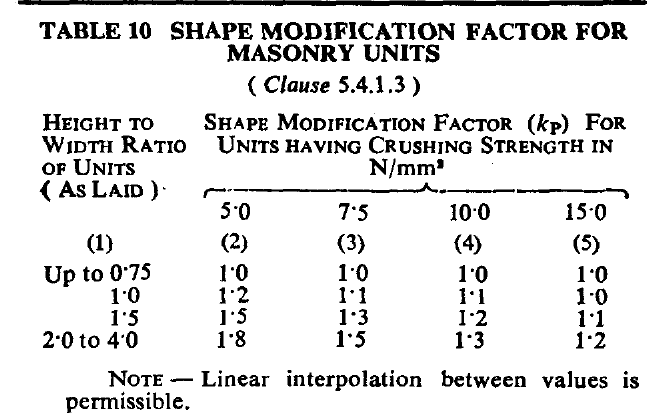
Influence of the shape modification factor on the strength of a wall
- A taller unit (larger height-to-width ratio as laid) means fewer bed joints per metre of wall height, hence less soft mortar, hence less lateral tension induced in the unit — so the masonry is stronger. This is the same mechanism as Fig. 2.8.
- The gain can be substantial: kp = 1.8 for a unit of ratio 2.0–4.0 made of 5 N/mm² material — an 80% increase in permissible stress for exactly the same material.
- The benefit diminishes as the unit gets stronger (only 1.2 at 15 N/mm²) because with a strong unit the mortar joint is relatively less critical — and above 15 N/mm² the factor does not apply at all.
- A common brick laid flat has a ratio of about 57/115 ≈ 0.5, i.e. kp = 1.0 — which is why the factor is described as being for “units other than common bricks” (concrete blocks, stone blocks, hollow blocks laid on edge, etc.).
2.6.8 Design Procedure for a Wall under Uniformly Distributed Axial Load
- Select a trial wall thickness, based on available unit dimensions, the masonry strength required, self-weight considerations, and general requirements (security, temperature, humidity).
- Calculate the total load per unit length of wall. Load combinations to consider: DL + LL; DL + appropriate LL + seismic load; DL + appropriate LL + wind load; DL + seismic load.
- Calculate the effective height heff and effective length leff.
- Calculate the effective thickness teff (apply the stiffening coefficient if the wall is stiffened by piers, buttresses or cross walls).
- Calculate the slenderness ratio SR = lesser of heff/teff and leff/teff. Check it against the limiting SR.
- Calculate the actual compressive stress σac = P / Ae, where Ae is the effective area per unit length of wall.
- Compute the eccentricity e and the eccentricity ratio e/t.
- Read the stress reduction factor ks from Table 9 using SR and e/t (e = 0 for a purely axial case).
- Select the unit and mortar if not given, and read the basic compressive stress fb from Table 8.
- Compute the area reduction factor ka and the shape modification factor kp.
- Compute the permissible stress fper = fb ks ka kp.
- Apply the design criterion: if σac ≤ fper the wall is SAFE; otherwise increase the thickness, or the unit or mortar strength, and repeat.
2.6.9 Design Criteria for Walls Subjected to Transverse Loading 2076 Chaitra, Q2a
A wall carrying wind or out-of-plane seismic pressure in addition to vertical load must satisfy the following:
- Convert the transverse load into an equivalent eccentricity. The lateral pressure produces a moment M; combined with the vertical load W this is expressed as W acting at e = M/W, and the wall is then treated exactly as an eccentrically loaded wall (§2.6.6).
- Establish the span direction. A wall supported top and bottom spans vertically; a wall supported by cross walls at its ends spans horizontally; a wall supported on all four sides develops two-way bending. The critical bending moment follows from the support condition.
- Check the flexural tensile stress against the very low permissible value. Since masonry has almost no tensile strength, the usual criterion is that the resultant must remain within the middle third, i.e. no tension develops: e ≤ t/6.
- Take advantage of the precompression. The vertical dead load produces a compressive stress that must first be overcome before tension can occur; this is why an upper-storey wall with little load on it is far more vulnerable out-of-plane than a heavily loaded ground-floor wall.
- Check the combined stress: σ = W/A ± M/Z must be within the permissible compressive stress (with the 25% increase allowed for eccentric/lateral load where applicable), and the tensile side must not exceed the permissible flexural tension.
- Check stability and the slenderness limit — free-standing walls and parapets have a limiting SR of only 10.
- Provide positive anchorage to the roof/floor with metal anchors so the assumed support condition actually exists, and provide bands and cross walls to reduce the span.
2.7 Emerging Materials and Technologies in Masonry Structures
| Material / technology | Description and benefit |
|---|---|
| Fly-ash bricks | Fly ash + lime + gypsum, cured without firing. Uses an industrial waste, saves topsoil and fuel, gives accurate dimensions and higher strength than kiln brick. |
| AAC blocks (autoclaved aerated concrete) | Very light (about one-third the density of brick masonry), good thermal insulation and fire rating; large units mean fast construction and, critically for seismic design, much lower mass and hence lower inertia force. |
| Compressed stabilised earth blocks (CSEB) and interlocking blocks | Soil stabilised with 5–8% cement and machine-pressed. Very low embodied energy; interlocking versions need little or no mortar, tolerate unskilled labour and allow vertical reinforcement through aligned holes. Increasingly used in post-2015 reconstruction in Nepal. |
| Hollow concrete blocks with reinforced cores | Vertical bars and grout in the cores turn the wall into genuine reinforced masonry with real ductility. |
| Confined masonry systems | Now codified worldwide as the recommended low-rise system for seismic regions (see §2.4.2). |
| Prestressed / post-tensioned masonry | Vertical tendons add precompression, greatly increasing the out-of-plane and in-plane capacity and giving self-centring behaviour. Used for retaining walls, tanks and footbridges. |
| Bed-joint reinforcement (ladder/truss mesh, polymer geogrid) | Enhances the capacity of walls to resist lateral loading and controls shrinkage cracking, with almost no change in construction method. |
| Thin-joint / adhesive mortar systems | 2–3 mm polymer-modified joints with precision units; thinner joints give higher masonry strength (§2.3.4) and faster laying. |
| FRP, ferrocement and textile-reinforced mortar overlays | Carbon/glass/basalt fabric bonded to the wall face, or a wire-mesh and cement overlay (jacketing) — the leading retrofitting technologies (Chapter 6). |
| Rat-trap bond and cavity construction | Uses 25–35% fewer bricks with better insulation — a low-technology but genuinely economical innovation. |
| Geopolymer and low-carbon mortars, 3D-printed masonry, robotic bricklaying | Emerging research directions aimed at cutting embodied carbon and improving quality control — the single biggest weakness of traditional masonry. |
Quick Revision — Facts and Formulae to Memorise
- Permissible stress: fper = fb × ks × ka × kp.
- SR = lesser of heff/teff and leff/teff. ks = 1.0 for SR ≤ 6, e = 0.
- ka = 0.7 + 1.5 A, only when A < 0.2 m².
- kp from height/width ratio as laid; only for units up to 15 N/mm²; max 1.8.
- heff = 0.75 H (full restraint), H (partial), 1.5–2 H (free at top). Pier between openings, full restraint: 0.75 H + 0.25 H1.
- teff = stiffening coefficient × tw — but only when SR is based on effective height, never on effective length. Cavity wall: 2/3 Σt or the thicker leaf, whichever is greater.
- Limiting SR: 27 (cement mortar load bearing), 20 / 13 (lime mortar, 1–2 / 3+ storeys), 30 (panel & curtain), 10 (free standing & parapet).
- Eccentricity: ignore if e ≤ t/24; 25% overstress allowed for t/24 < e ≤ t/6; tension develops for e > t/6.
- Masonry strength ≈ 25–50% of the unit strength. Mortar must be weaker than the unit.
- Nepal Standard brick: 240 × 115 × 57 mm with a 10 mm joint; water absorption ≤ 15%.
- Mortar grades: H1 (1:0–0.25:3, 10 MPa) → L1 (1:0:8, 0.7 MPa). Cement mortar never richer than 1:3.
- Shear: fs = 0.1 + fd/6 ≤ 0.5 N/mm². Em ≈ 550–1100 fm.
- Hollow unit: net area < 75% of gross; solid unit: ≥ 75%.
- Confined masonry = wall first, tie-columns cast after. RC frame + infill = frame first, wall after.
Chapter Summary
Masonry is a composite of stiff, strong units bedded in a softer, weaker mortar. It has been used for at least 10,000 years, first entirely by empirical rules of thumb and only in the last few decades by structural calculation. Its nature is composite, heterogeneous, anisotropic, brittle, heavy and extremely sensitive to workmanship; it is strong in compression but almost useless in tension, so it is used for walls, columns, arches and domes. Its advantages are strength in compression, durability, low-cost local materials, fire and thermal performance and long life; its disadvantages are its negligible tensile strength, weight, brittleness and vulnerability to frost, efflorescence and earthquakes.
The units may be burnt clay brick, stone, concrete block, adobe or compressed earth; the Nepal Standard brick is 240×115×57 mm with water absorption not exceeding 15%. Mortars may be cement, lime, cement–lime or mud, graded H1 to L2, and are matched to the unit strength. The strength of masonry is governed by the unit–mortar interaction: the soft mortar tries to expand laterally, is restrained, and puts the unit into lateral tension, so the prism splits vertically through the units at only 25–50% of the unit strength. The strength therefore depends on unit strength and shape, mortar strength and workability, joint thickness, slenderness, eccentricity, sectional area, bond and workmanship.
Structurally, masonry buildings are classified as load-bearing (walls carry everything), confined (walls built first and then confined by RC tie-columns and tie-beams) or infill (masonry panels built into an already-cast RC frame). Walls are classified by function, construction and structural role. Lateral load is resisted by in-plane walls, carried to them by the floor and roof diaphragms, with the out-of-plane walls being the weak link; piers and spandrels govern the behaviour of perforated walls, arches carry load in pure compression at the price of a horizontal thrust, and bands, vertical reinforcement and toothed joints provide the box action that holds the building together. Finally, IS 1905:1987 designs walls by working stress: the permissible compressive stress fper = fb ks ka kp, where the slenderness ratio and eccentricity enter through ks, the smallness of the section through ka = 0.7 + 1.5A, and the height-to-width ratio of the unit through kp.
All Past Exam Questions from this Chapter
CHAPTER 2 — COMPLETE LIST (CE 72502 / ENCE 367)
- What are the physical properties of bricks? [4] (2081 Bhadra, Q3a) → §2.3.1
- Describe the nature of the masonry structure. [4] (2081 Bhadra, Q4a) → §2.2.2
- Define properties and strength of brick masonry, affecting factors and relation of unit and mortar on strength of masonry. [8] (2080 Bhadra, Q2a) → §2.3.1, §2.3.4, §2.3.5
- Calculate the effective height, effective length, effective thickness and slenderness ratio of walls A, C, G and P. [12] (2080 Bhadra, Q2b) → §2.6.4, §2.6.5
- Explain load-bearing masonry walls, infill masonry, and confined masonry. [8] (2079 Bhadra, Q2a) → §2.4.2
- Define masonry structure type based on materials with its advantages and disadvantages. [6] (2078 Bhadra, Q2a) → §2.4.1, §2.2.4
- Describe affecting factors and relation between unit and mortar on strength of brick masonry. [6] (2078 Bhadra, Q2b) → §2.3.4, §2.3.5
- State and explain briefly the factors affecting the compressive strength of brick masonry. [8] (2076 Chaitra, Q1a) → §2.3.5
- Explain the design criteria of walls subjected to transverse loading. [8] (2076 Chaitra, Q2a) → §2.6.9
- Explain the following applied to masonry structures: (i) Stress reduction factor (ii) Confined masonry. [4×2] (2076 Chaitra, Q4b) → §2.6.7(b), §2.4.2
- Explain the following and state the influence of it on strength of the wall: (i) Slenderness ratio (ii) Shape modification factor. [12] (2075 Chaitra, Q3) → §2.6.5, §2.6.7(d)
In addition, every wall, pier and column design numerical in the paper — 2075 Q4 and Q5, 2076 Q1b, Q2b, Q3b, 2078 Q3 to Q6, 2079 Q3b and Q4b, 2080 Q3a and Q3b, 2081 Q3b and Q4b — is solved using the design procedure of §2.6.8 and the four factors of §2.6.7. Work through the 12-step sequence until it is automatic.